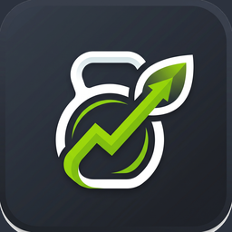

Crisol · Última actualización: 22 de agosto de 2026 · Versión 1.1
Crisol no vende tus datos, no muestra publicidad y no comparte tu información con anunciantes. No hay ningún negocio detrás de tus datos: la app es gratuita y se mantiene con aportes voluntarios.
Tus datos de salud —medicamentos, recetas, órdenes médicas— no se publican en ninguna parte de la app, ni siquiera en tu perfil público. La foto de una receta escaneada no sale de tu teléfono. Y ningún resultado de examen pasa por Crisol.
Crisol es una aplicación desarrollada y operada por Nicolás Enrique Vidal Gómez, persona natural, en Chile.
Para cualquier consulta, solicitud o reclamo sobre tus datos personales, el canal de contacto es soportecrisolapp@gmail.com. Respondemos en un plazo máximo de 30 días corridos.
Solo lo que la app necesita para funcionar. Nada se recoge "por si acaso".
| Dato | Para qué | Base |
|---|---|---|
| Correo electrónico y contraseña | Crear tu cuenta, iniciar sesión y recuperar el acceso. La contraseña nunca se guarda en texto plano. | Ejecución del servicio |
| Nombre, nombre de usuario, foto y ciudad | Identificarte dentro de la app y, si activas tu perfil público, mostrarte en el ranking y la comunidad. | Consentimiento |
| Fecha de nacimiento, sexo, estatura y peso corporal | Calcular tus objetivos de nutrición con límites seguros y tu coeficiente DOTS para el ranking de fuerza. | Consentimiento |
| Entrenamientos: ejercicios, series, kilos, repeticiones | Tu registro de entrenamiento, estadísticas y progreso. | Ejecución del servicio |
| Nutrición: comidas, calorías, macronutrientes, agua | Tu diario de alimentación y el seguimiento de tus metas. | Consentimiento |
| Medicamentos: nombre, dosis, horarios, notas y tomas registradas | Recordarte tus tomas con alarmas y llevar tu registro de adherencia. | Consentimiento explícito (dato sensible) |
| Recetas y órdenes médicas emitidas por profesionales verificados | Que tu médico o enfermero pueda cargarte una indicación y que tú la veas y la sigas. | Consentimiento explícito (dato sensible) |
| Pasos y calorías activas (Health Connect) | Complementar tu gasto energético estimado. Solo si concedes el permiso. | Consentimiento explícito (dato sensible) |
| Fotos y videos que subes: avatar, gimnasios, platos de comida, videos de récord | Mostrar tu perfil, el directorio de gimnasios, estimar tu comida y verificar tus marcas de fuerza. | Consentimiento |
| Credenciales profesionales (título, cédula) si te registras como profesional | Verificar que eres quien dices ser antes de dejarte asignar planes o recetar. | Consentimiento explícito |
Desliza la tabla hacia el lado para verla completa.
Los medicamentos, las recetas, las órdenes médicas y tus datos corporales son datos sensibles según la ley chilena. Los tratamos con reglas más estrictas que el resto:
Con nadie con fines comerciales. Solo con los proveedores técnicos que hacen funcionar la app, y cada uno recibe únicamente lo que necesita:
| Proveedor | Qué recibe | Dónde |
|---|---|---|
| Supabase (base de datos, cuentas y archivos) | Tu cuenta y los datos que sincronizas. | Estados Unidos |
| Google — Gemini (inteligencia artificial) | Solo la imagen o el texto del momento: la foto de un plato, la foto de una receta o tus objetivos ya calculados. No recibe tu identidad ni tu historial. | Estados Unidos |
| Cloudflare R2 | Los videos de récord que subes al ranking, que son públicos por su naturaleza y se borran al resolverse la verificación. | Global |
| Mercado Pago | Si donas: el monto y tu identificador de Crisol. La app nunca ve ni guarda los datos de tu tarjeta; el pago ocurre íntegramente en el sitio de Mercado Pago. | Chile / Argentina |
| Google Play Services y Health Connect | Health Connect entrega los pasos al teléfono; ese dato no sale del dispositivo salvo que lo sincronices con tu cuenta. | En el dispositivo |
Desliza la tabla hacia el lado para verla completa.
También compartimos datos cuando una autoridad competente lo exige por ley, y en ese caso te lo informamos salvo que la propia orden lo prohíba.
Nuestros proveedores de infraestructura están fuera de Chile, principalmente en Estados Unidos. Al usar Crisol aceptas esa transferencia, que se realiza sobre conexiones cifradas y con proveedores que ofrecen cláusulas contractuales de protección de datos.
Crisol tiene desactivada la copia de seguridad automática de Android: tu base de datos con medicamentos y recetas no se sube a Google Drive ni se transfiere al cambiar de teléfono.
La Ley 19.628 y la Ley 21.719 —que entra en plena vigencia el 1 de diciembre de 2026— te reconocen estos derechos, que puedes ejercer escribiendo a soportecrisolapp@gmail.com:
Si crees que no respondimos bien, puedes reclamar ante la Agencia de Protección de Datos Personales de Chile una vez que entre en funciones.
Si ocurriera una vulneración que afecte tus datos, te lo informaremos por correo y a la autoridad, dentro de los plazos que exige la ley.
Crisol está dirigida a personas mayores de 18 años. No está pensada para menores de edad y así está declarada en Google Play.
Aun así, la app lleva una protección de respaldo: no sugiere déficits calóricos ni cambios de dieta a quien declara una fecha de nacimiento que corresponde a un menor de edad. Si detectamos la cuenta de una persona menor de 18 años, la eliminaremos junto con sus datos.
Crisol usa inteligencia artificial para estimar las calorías de una foto, transcribir una receta médica y proponer rutinas y repartos de comidas.
La IA puede cometer errores y no reemplaza la indicación de un profesional de la salud. Nunca decide sobre tus medicamentos: no sugiere fármacos, no corrige dosis y no evalúa interacciones. Cuando escanea una receta solo copia lo que ya estaba escrito, y nada se guarda sin que tú lo confirmes campo por campo.
Los objetivos de calorías los calcula la app con límites de seguridad —nunca bajo tu metabolismo basal—, no la IA.
Si cambiamos algo relevante, actualizaremos la fecha de arriba y te avisaremos dentro de la app antes de que el cambio entre en vigor. Las versiones anteriores quedan disponibles si las solicitas.
Escríbenos a soportecrisolapp@gmail.com por cualquier duda, solicitud de datos, ejercicio de derechos o reclamo.